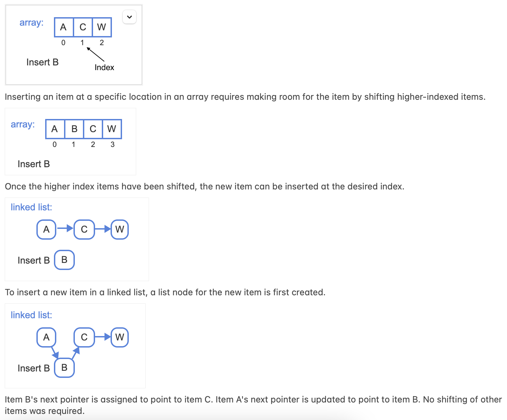
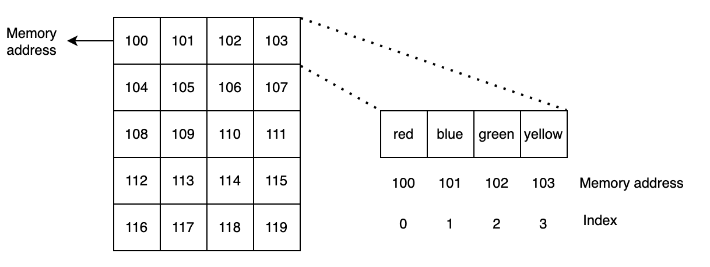

Why Learn Data Structures?
The Data Structures course is one of the most important courses in an undergraduate software engineering or computer science program. Data structures are fundamentally about creating efficiency in software.
A programmer may be able to write an application that produces the desired result. However, an equally important question is:
Is the code written with efficiency in mind?
Efficiency can be defined in terms of how effectively code uses time and space.
For example, consider the following two functions. Both print all even numbers from 2 through 100, but one performs fewer iterations than the other.
# Version 1
def print_numbers_version_one():
number = 2
temp = 1
while number <= 100:
temp += 1
if number % 2 == 0:
print(number)
number += 1
print("Loop executed", temp, "times")
# Version 2
def print_numbers_version_two():
number = 2
temp = 0
while number <= 100:
temp += 1
print(number)
number += 2
print("Loop executed", temp, "times")
Which of these functions runs faster?
Version 2 performs fewer iterations. Version 1 examines every number between 2 and 100, while Version 2 considers only the even numbers.
We are living in the data age. Big data---information characterized by extremely large volume, diversity, and complexity---is everywhere.
A data structure is a way of organizing and storing data so that operations can be performed efficiently.
Common operations include accessing, updating, searching, inserting, and removing data.
Data Structure Description
Record Stores a collection of related fields.
Array Stores an ordered collection of items accessible by positional index.
Linked List Stores items in nodes connected by references or pointers.
Binary Tree A tree in which each node can have up to two children.
Hash Table Uses a hash function to map keys to storage locations.
Heap A tree-based structure maintaining a min-heap or max-heap ordering property.
Graph Represents relationships using vertices connected by edges.
Choosing Data Structures
The data structure selected for a program depends on the type of data being stored and the operations that the program needs to perform.
It is important to select a data structure that performs well for the task being performed.

What Are Algorithms?
An algorithm is a set of instructions for completing a specific task.
For example, preparing pasta might involve:
- Boil water in a pan.
- Add salt and oil.
- Add pasta to the boiling water.
- Check whether the pasta is cooked.
- Drain the water when the pasta is cooked.
When applied to computing, an algorithm describes a sequence of steps for accomplishing a particular computational task.
Pseudocode
Before implementing an algorithm, it is often useful to describe the solution using pseudocode. Pseudocode expresses algorithmic steps in a form intended primarily for humans rather than computers.
Practical Applications
Computational problems occur in many domains, including e-commerce, internet technologies, biology, manufacturing, transportation, and scientific computing.
| Application Domain | Computational Problem | Common Algorithm |
|---|---|---|
| DNA Analysis | Find the longest sequence shared by two DNA sequences. | Longest Common Substring |
| Search / Inventory | Determine whether a product exists in a sorted collection. | Binary Search |
| Navigation | Determine the shortest route between locations. | Dijkstra's Shortest Path Algorithm |
Basic Data Structure: Arrays
Arrays are among the most fundamental data structures.
An array stores elements sequentially in memory. Each element can be referenced using an index.
user_array = ["red", "blue", "green", "yellow"]
Elements can be accessed using:
user_array[0]
user_array[1]
user_array[2]
user_array[3]
The size of an array describes how many elements it contains. An index identifies the position of an element.

Operations on Arrays
Read
Reading means accessing data stored at a particular index.
user_array[1]
Direct indexed access is a constant-time operation.
Insert
Insertion means adding an element. Inserting near the beginning of a contiguous array generally requires existing elements to be shifted.
Delete
Deletion means removing an existing element. Deleting near the beginning or middle may require subsequent elements to be shifted.
Search
Searching means finding a particular element. For an unsorted array using linear search, the number of elements examined depends on where the desired element is located.
The Need for Measuring Efficiency
Execution time alone is not an ideal measure of algorithm efficiency because it depends on hardware, software, compiler/interpreter behavior, operating system conditions, and other factors.
Computer scientists therefore analyze how the number of operations grows as the amount of input data increases. This leads to time complexity.
Processor Clock Speed
Processor clock speed alone does not provide a complete comparison of CPU performance. An older 4 GHz processor does not necessarily outperform a newer 3 GHz processor because newer architectures may perform more work per clock cycle.
Number of Steps in Array Operations
Let N represent the number of elements in an array.
Read Operation
Accessing an array element using a known valid index requires essentially the same amount of work regardless of array size.
Read: O(1)
Insert Operation
Inserting at index 0 may require shifting approximately N elements.
Insert: O(N)
In implementations such as Python lists or C++ vectors, appending is typically described as amortized O(1) because the underlying storage may occasionally need to be resized.
Search Operation
For linear search, the algorithm may need to examine all N elements.
Linear Search: O(N)
Delete Operation
Deleting the first element may require shifting the remaining elements.
Delete: O(N)
Array Time Complexity Summary
| Operation | Best Case | Worst Case | Big-O Worst Case |
|---|---|---|---|
| Read | 1 | 1 | O(1) |
| Insert | 1 | Proportional to N | O(N) |
| Search | 1 | N | O(N) |
| Delete | 1 | Proportional to N | O(N) |
Conclusion
Choosing the appropriate data structure is an important part of software development, particularly when an application processes large amounts of data or repeatedly performs operations such as reading, inserting, searching, and deleting.
Different data structures provide different performance characteristics. A programmer should consider both what operations the application needs to perform and how the cost of those operations grows as the amount of data increases.
In this section, you learned:
- what data structures are,
- why choosing an appropriate data structure matters,
- what algorithms are,
- how arrays organize and access data,
- how common array operations behave, and
- why time complexity is important when evaluating algorithms.